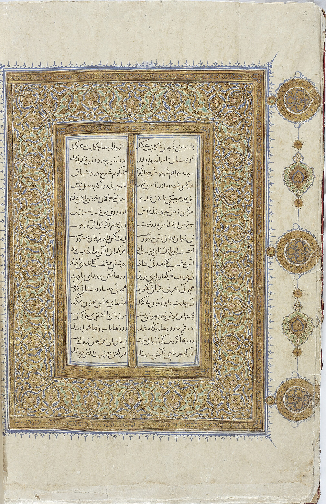
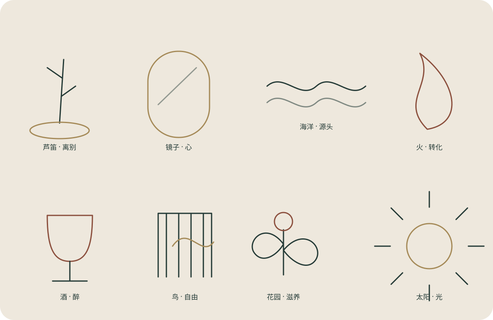
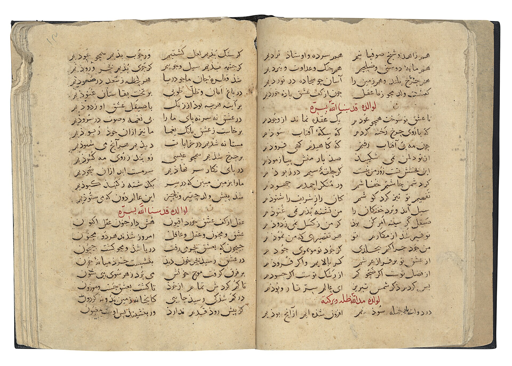

芦笛：被割离之后才发出的声音
它首先属于听觉。芦笛不是在“谈故乡”，而是在声音本身里携带失去故乡的痕迹。鲁米以此开启《玛斯纳维》。
核心动作：被割离 → 中空 → 被吹奏 → 发声。
POETRY ATLAS · TEXT / IMAGE / METAPHOR
第二版从《玛斯纳维》六卷中建立第一批可追溯诗段：每一条都保留卷次与联数，并进一步整理意境、象征、比喻机制、思想语境，以及它如何成为今天内在探索的“第三物”。
当前收录 20 条核心诗段 · 覆盖六卷 · 持续扩充。这里的“数据库”不是把鲁米变成标签，而是让标签重新把你带回原诗。

先理解数据库的逻辑
同一个“火”，在不同诗段里可以是神圣之爱，也可以是欲望；同一个“酒”，既可能指精神陶醉，也可能在故事中就是世俗酒。真正重要的是：它在这一段里做了什么。

可检索诗歌数据库 · v2
可以搜关键词，也可以按卷次、意象或主题筛选。每一张卡片都不是“金句卡”，而是一份微型文本研究。
正在读取诗歌条目……
八组核心意象
它首先属于听觉。芦笛不是在“谈故乡”，而是在声音本身里携带失去故乡的痕迹。鲁米以此开启《玛斯纳维》。
黑铁、铁锈、擦拭、澄清、映月——鲁米把心灵训练写成非常具体的工艺过程。
钵盂装不下海，泡沫不是海，水缸却可以与海相通。海洋意象不断调整“个体与整体”的关系。
爱的火焰使芦笛发声，欲火却使人失去辨识。鲁米故意让“火”承担相反功能。
精神之酒、爱之酒、世俗酒不是一回事。醉意常用来描写理性边界松动，但必须看上下文。
精神之鸟会在笼中感到局促；被家鸡养大的鸭子仍然渴望海。自由与“记得自己是谁”彼此相连。
鲁米常把心、雨水、溪流、花园串在一起。好的语言不是信息，而是让某种东西重新生长。
黑屋大象最关键的不是“每个人都有道理”，而是：没有光时，每个人只能把触摸到的局部当成全部。

数据库下一层
当前20条全部来自已上传的《玛斯纳维》六卷中文译本，并标注卷次、联数与译者。下一批将逐条补齐：波斯原文、拉丁转写、Nicholson / Arberry / Chittick 等英译比较、关键词词根，以及同一意象在《迪万·沙姆斯》中的变化。